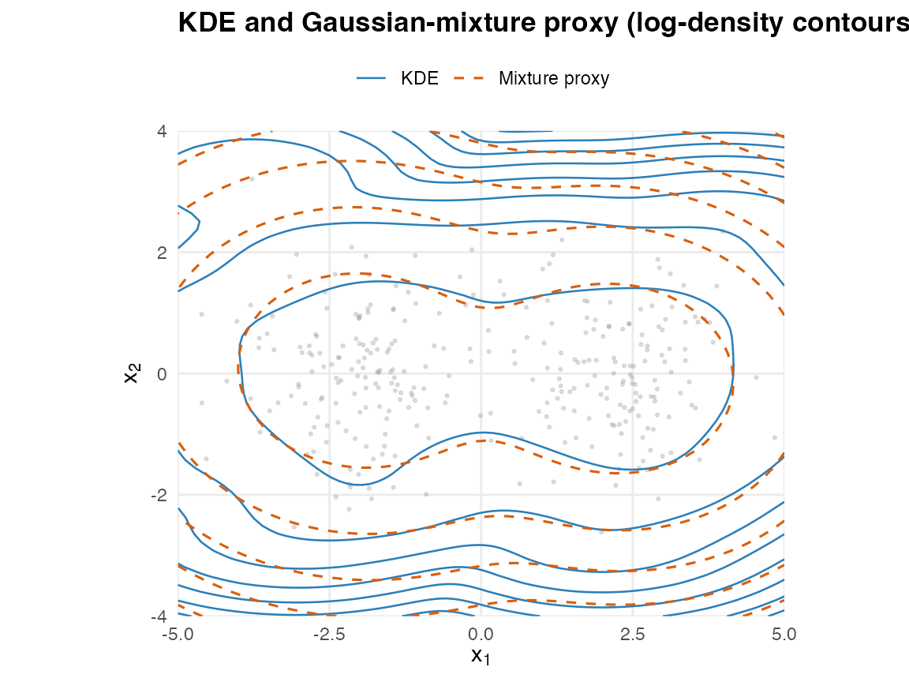

From KDE: compressing a kernel density estimate into a Gaussian-mixture proxy
Source:vignettes/from_kde.Rmd
from_kde.RmdWhy a from_kde() constructor
A kernel density estimate (KDE) gives a smooth, non-parametric
density from a sample of n points, but with three
operational costs:
- No closed-form marginals. Integrating out a coordinate of a KDE requires a numerical sweep over the kernel mixture.
- No closed-form conditioning. There is no analogue of the Schur complement; one has to resample or build a conditional KDE per query.
- No native aggregation algebra. Pushforwards through linear operators, observation-channel updates, or block-sums all collapse to Monte Carlo.
proxymix::from_kde() compresses the KDE into an
N-component Gaussian mixture proxy (with N
typically much smaller than n) by treating the KDE as a
normalised, evaluable target and running regime (iii) KLD-EM against it.
The proxy then supports the full closed-form operator set exposed by the
rest of the package – dgmm(), rgmm(),
gmm_marginalise(), gmm_conditionalise(), plus
the v0.3 affine-Gaussian calculus (gmm_affine(),
gmm_observe()).
This is not new science. It is a practical bridge between a non-parametric density estimate and a parametric closed-form mixture representation. The bias inherited from the KDE is reproduced in the proxy; the bandwidth controls the bias-variance trade-off.
Recovering a known mixture
Sample from a known bimodal mixture and ask from_kde()
to recover it.
set.seed(1L)
true_means <- list(c(-2, 0), c(2, 0))
true_cov <- diag(2)
x <- rbind(
mvnfast::rmvn(150L, mu = true_means[[1L]], sigma = true_cov),
mvnfast::rmvn(150L, mu = true_means[[2L]], sigma = true_cov)
)
fit <- from_kde(
x, N = 2L,
bandwidth = "silverman",
is_size = 2000L, max_iter = 60L, seed = 1L,
validation_size = 2000L
)
fit
#> <gmm_fit>: regime = "kld", K = 2, p = 2
#> target : from_kde
#> iterations : 15
#> converged : TRUE
#> [1] w = 0.5083, |mu| = 1.9840, tr(Sigma) = 3.0490
#> [2] w = 0.4917, |mu| = 2.2039, tr(Sigma) = 2.4588The proxy components sit near the true means.
Quality of the importance-sampled fit
Inspect ESS and the largest self-normalised weight: a healthy
regime-(iii) fit has ESS close to is_size and a max-weight
share of a few percent.
ess_summary(fit)
#> $is_size
#> [1] 2000
#>
#> $ess
#> [1] 1532.381
#>
#> $ess_relative
#> [1] 0.7661903
#>
#> $max_weight
#> [1] 0.001171959
#>
#> $support_fraction
#> [1] 1
#>
#> $mc_se_kld
#> [1] 0.005589403
#>
#> $validation_size
#> [1] 2000
#>
#> $validation_ess
#> [1] 1530.978
#>
#> $validation_ess_relative
#> [1] 0.7654892
#>
#> $validation_max_weight
#> [1] 0.00116206
#>
#> $validation_support_fraction
#> [1] 1
#>
#> $validation_kld
#> [1] 0.02483515The validation block reports a held-out KLD on an independent IS draw – a safeguard against in-sample overfitting to one particular IS realisation.
Bandwidth sensitivity
Smaller bandwidths track the data more tightly (lower bias, higher variance); larger bandwidths smooth the proxy. The proxy inherits this trade-off.
bandwidth_grid <- c(0.2, 0.5, 1.0)
fits <- lapply(bandwidth_grid, function(h) {
from_kde(x, N = 2L, bandwidth = h,
is_size = 1500L, max_iter = 40L, seed = 1L)
})
data.frame(
bandwidth = bandwidth_grid,
ess = vapply(fits, function(f) f@diagnostics$ess, numeric(1L)),
max_weight = vapply(fits, function(f) f@diagnostics$max_weight, numeric(1L)),
trace_Sigma_k1 = vapply(fits, function(f) sum(diag(f@covariances[[1L]])), numeric(1L))
)
#> bandwidth ess max_weight trace_Sigma_k1
#> 1 0.2 768.4537 0.007158846 2.165142
#> 2 0.5 997.8578 0.001887074 2.463437
#> 3 1.0 1189.3327 0.001287610 3.816308Visualising the compression
Compare the KDE log-density and the proxy log-density on a planar grid.
grid <- expand.grid(
x = seq(-5, 5, length.out = 80L),
y = seq(-4, 4, length.out = 60L)
)
gm <- as.matrix(grid)
kde_log_density <- fit@target@log_density
grid$kde <- kde_log_density(gm)
grid$proxy <- log(dgmm(gm, fit))
## Shared contour levels so the two log-densities are directly comparable.
brks <- pretty(range(c(grid$kde, grid$proxy), finite = TRUE), 9L)
ggplot() +
geom_point(data = as.data.frame(x), aes(V1, V2),
colour = "grey55", alpha = 0.25, size = 0.5) +
geom_contour(data = grid,
aes(x, y, z = kde, colour = "KDE", linetype = "KDE"),
breaks = brks, linewidth = 0.45) +
geom_contour(data = grid,
aes(x, y, z = proxy,
colour = "Mixture proxy", linetype = "Mixture proxy"),
breaks = brks, linewidth = 0.55) +
scale_colour_manual(name = NULL,
values = c("KDE" = "#2C7FB8",
"Mixture proxy" = "#D95F0E")) +
scale_linetype_manual(name = NULL,
values = c("KDE" = "solid",
"Mixture proxy" = "dashed")) +
coord_equal(expand = FALSE) +
labs(title = "KDE and Gaussian-mixture proxy (log-density contours)",
x = expression(x[1]), y = expression(x[2])) +
theme_minimal(base_size = 11) +
theme(plot.title = element_text(face = "bold"),
legend.position = "top",
panel.grid.minor = element_blank())
Scope and limits (v0.2)
-
Dimensional cap.
from_kde()is well-tested forp <= 5; it warns betweenp = 6andp = 10, and refusesp > 10. Regime (iii) is driven by importance sampling, whose effective sample size falls sharply in high dimensions. For richer ambient spaces, compose a low-pproxy with the affine-Gaussian operator calculus rather than fitting in the ambient space. -
Bandwidth shapes. Only scalar and diagonal
bandwidths are supported. A full-matrix bandwidth effectively encodes a
covariance estimate and blurs the KDE-vs-mixture distinction; if that is
what you want, fit the mixture directly with
fit_proxymix(regime = "sample"). -
Normalisation. A KDE is normalised by construction,
so the returned
gmm_targetdeclaresnormalised = TRUEandlog_normalizer = 0. This makeshellinger_mc()meaningful and lets the KLD diagnostics report absolute values, not shifted ones. -
What this is not. It is not a method for
picking the KDE bandwidth. Use the conventional rules of thumb
(
"silverman","scott") or a cross-validation procedure outside the package, then pass the chosen bandwidth in.
When to prefer fit_proxymix(regime = "sample")
instead
If your goal is “find a Gaussian-mixture density given samples”, the
classical EM regime is more direct, fits in linear time, and does not
incur the regime-(iii) importance-sampling tax. from_kde()
only earns its place when you specifically want the KDE’s smoothing as a
step in your pipeline – e.g. as part of a sequence such as
samples |> from_kde() |> gmm_conditionalise() |> rgmm()– or when the KDE’s bias-variance trade-off is part of what you are trying to validate downstream.
References
- Hoek, J. van der and Elliott, R. J. (2024). Mixtures of multivariate Gaussians. Stochastic Analysis and Applications. doi:10.1080/07362994.2024.2372605.
- Silverman, B. W. (1986). Density Estimation for Statistics and Data Analysis. CRC Press.
- Scott, D. W. (1992). Multivariate Density Estimation: Theory, Practice, and Visualization. Wiley.